Alapok
Minden alapozás a terepszint alá kerül. Amíg csak egy-két méteres alapárok kell, a talaj – a durvaszemcsés, kohézió nélküli talajokat kivéve – rövid ideig függőleges falban is megáll. Egy pinceszinttől lefelé viszont a gödör falát vagy rézsűvel kell kiváltani, vagy valamilyen szerkezettel meg kell támasztani – és ha a gödör a talajvíz alá ér, a vizet is ki kell zárni.
Gödör, árok, munkatér
Ha egy alaptest helyéről emeljük ki a talajt, alapgödörről (pontalap) vagy alapárokról (sávalap) beszélünk. Ha egy egész építmény számára, akkor munkagödörről és munkaárokról. A munkaárok tulajdonképpen keskeny munkagödör: jellemzően legfeljebb 1–3 m széles, vonalas létesítményekhez – például közművek fektetéséhez – készül, és a munka végén visszatemetik.
Minél mélyebb a kiemelés, annál valószínűbb, hogy megjelenik a talajvíz. Ha a gödör alsó síkja az építési talajvízszint alá kerül, gondoskodni kell a víztelenítésről is. Ezért a munkatérhatárolást és a víztelenítést az alapozással párhuzamosan kell megtervezni – egyes rendszereknél (például a résfalnál) a munkatérhatárolás egyben maga az alapozás is.
A munkagödör nagyságát meghatározza
- az építmény méretei (+ munkatér a falak, szigetelés mellett),
- a közlekedési, szállítási igények (rámpa, daru, kotró),
- a víztelenítési igények (szivárgó, zsomp, kutak helye).
A határolás módja függ
Koppints egy szempontra!
Mi tartja meg a falat?
A határolás lehet ideiglenes – a felszín alatti építmény elkészülte után megszűnik a szerepe – vagy végleges, amikor az építmény része lesz (mélygarázs, aluljáró, alagút). Az egyensúlyt négyféleképpen lehet biztosítani, és sok esetben ezek kombinációja ad megoldást, például a befogott-horgonyzott szerkezet.
A lehetséges szerkezetek – technológia-térkép
A határolás kialakítható rézsűsen (szerkezet nélkül), dúcolással (a szemközti földfalak egymásnak támaszkodnak), befogott támszerkezetekkel – hézagos erősítésű fallal, szádfallal, cölöpfallal vagy résfallal –, amelyeket mélyebb gödörnél hátrahorgonyzással vagy belső kitámasztással egészítünk ki, a talaj szegezéssel való megerősítésével, végül különleges megoldásokkal. A fejezetek is ebben a sorrendben követik egymást. Minden csempe a saját fejezetére visz; a jobb felső jelzés: ▶ szám – animációs videó, ▶ BME – valós felvétel a BME YouTube-csatornáján.
A réselt fal (résfal) és a nagy-szekrény (szekrényalapozás) is munkatérhatárolás – ezeket a mélyalapozásoknál tárgyaltuk. A résfal gyakran egyszerre határolja a munkateret, zárja ki a vizet és viseli a végleges terheket.
Rézsűs kialakítás
A legegyszerűbb megoldás – komolyabb mélyépítési technológia nem kell hozzá –, de nem biztos, hogy a legolcsóbb. Csak ott jöhet szóba, ahol közvetlenül a gödör mellett nincs építmény, és elég hely van. Sok helyet foglal, nagy földtömeget kell megmozgatni és deponálni (ehhez is hely kell), majd az építmény elkészülte után rétegesen tömörítve visszaépíteni. Egyes talajok (pl. kövér agyagok) kiemelés után nem alkalmasak visszaépítésre, vagy csak stabilizálással; gond lehet a deponált föld elázása–kiszáradása is.
- A rézsű legnagyobb hajlását állékonysági vizsgálattal kell meghatározni; kohéziómentes szemcsés talajban a hajlásszög nem lehet nagyobb a belső súrlódási szögnél (β ≤ φ).
- 3–5 m-nél magasabb rézsűbe padkát célszerű beépíteni.
- Veszélyes a befelé lejtő agyagréteg (főleg rétegvízzel), és a talajvíz nem várt emelkedése is okozhat rézsűmozgást.
- A közeli szádfal- vagy cölöpverés és a forgalom dinamikus hatása csökkenti az állékonyságot.
- Nagyon fontos a csapadékvíz elvezetése a gödörben és a felszínen is.
- A rézsű felett, a szakadólapon belül ne deponáljunk; a méretezésben szabvány szerint min. 10 kPa felszíni teher vehető figyelembe.
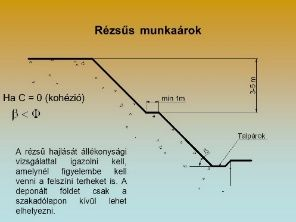


A rézsűs kiemelés földtömege a mélység négyzetével nő: 6 m mély gödörnél 1:1 hajlás mellett oldalanként folyóméterenként 18 m³ többletföldet kell kitermelni, deponálni, majd visszatömöríteni – 12 m-nél már 72 m³-t. Városi telken ezért szinte mindig megtámasztott falat építenek.
Munkaárok dúcolása
A dúcolás „szembetámaszt” jelent: a gödröt, árkot határoló két földfal nyomását nyomott elemekkel, dúcokkal vesszük fel – a két oldal földnyomása így egymásnak feszül. Mivel a dúc kihajlási hossza a gödör szélességével nő, a módszer elsősorban keskeny, 1–3 m széles közműárkokban használatos.
A dúcolat elemei
A hagyományos dúcolat a helyszínen, három elemből készül: a földfalat pallókkal terítik be, ezeket hevederek fogják össze, a hevedereket pedig dúcokkal támasztják szembe.
Régen mindhárom elem fából készült: 2 colos (48 mm) pallók, 12–24 cm oldalhosszú gerendahevederek és 12–16 cm átmérőjű gömbfa dúcok. Ma jellemzően acélt használnak: a földfal beterítésére Pátria- és Union-szádlemezt (csatornapallót), esetleg CS hullámlemezt, hevedernek melegen hengerelt I- és U-szelvényt, dúcnak I-tartót, csövet vagy – leggyakrabban – állítható hosszúságú csavaros acéldúcot.
A dúcolat készítésének módját az határozza meg, milyen talajban készül, van-e kohéziója, és egyáltalán milyen mélységig lehet megtámasztás nélkül, rövid ideig kiemelni.
A Pátria- és Union-szádlemez vékony falú (3–6 mm), 25–30 cm hasznos szélességű profilos lemez. Kapcsolata nem vízzáró, ezért csak dúcolásra való, víztelenítésre nem – szemben a hornyosan összefűzött, vízzáró acél szádfallal (lásd 4. fejezet).


Meddig áll meg a függőleges földfal?
Talajvíz felett, kötött talajban a függőleges földfal megtámasztás nélkül ideiglenesen egy bizonyos m₀ mélységig állékony. Ez a kohéziótól, a belső súrlódási szögtől, a térfogatsúlytól és a peremen ható terheléstől függ:
m₀ mélységig elméletileg megtámasztás nélkül is kiemelhető lenne az árok. A kiemelt földfal azonban ki van téve az időjárásnak (kiszáradás – zsugorodás, átázás), az állapota leromolhat, ezért munkavédelmi okból mindenképpen dúcolni kell:
Dúcolni kell mindig, ha dinamikus hatás érheti az árkot (közlekedés, cölöpözés), illetve épületek mellett – és a dúcolás biztonságát számítással kell ellenőrizni.
Az Egyesült Államokban a halálos árokbeomlások mintegy 80%-a 3 m-nél (10 lábnál) sekélyebb árokban történt. Egy köbméter föld 1,5–2 tonna: egy 3 m mély függőleges fal mögül folyóméterenként nagyjából 4 tonnányi ék csúszhat le.
2025 januárjában Tarcalon egy csatornajavításhoz kiásott, kb. 4–5 m mély, közel függőleges falú munkagödör fala omlott rá egy munkásra, aki életét vesztette. A gödör fala feltehetően nem volt megfelelően biztosítva; a vizsgálat a munkavédelmi szabályok megsértését vizsgálta.
A hazai közműszolgáltatói gyakorlatban például: 5 m-nél mélyebb munkagödörnél – vagy ha a perem mellett statikus, dinamikus teher hat – a dúcolás biztonságát számítással kell igazolni; az árok szélén 0,5 m-es padkát szabadon kell hagyni; az árokba létra kell; a dúcokon átjárni, azokat munkaállásként vagy anyagtárolásra használni tilos; a dúcolat mögötti üregeket ki kell tölteni.
Négy pallózási mód
Attól függően, hogy milyen az m₀ és a tervezett mélység (H) „viszonya”, a pallókat, hevedereket és dúcokat különböző módon lehet – és kell – elhelyezni:
Állított pallózás
Teljes mélységig kiemelnek, utána függőleges pallók, rájuk vízszintes hevederek, dúcok – min. két sorban.
Utánhajtott pallózás
m₀ mélységű lépcsőkben lefelé, minden lépcsőben utánhajtva a pallókat; a hevedereket ideiglenesen alátámasztják.
Vízszintes pallózás
Lépcsős mélyítés vízszintes pallókkal; a függőleges hevedereket lépcsőnként hosszabbakra cserélik.
Előrevert pallózás
Durvaszemcsés talaj: az acélpallókat a kiemelés előtt leverik, levibrálják, aztán lépcsőkben ásnak.


Állékonyabb, kötött talajban megengedhető a hézagos pallózás: kb. minden második palló elhagyható (a köztávolság legfeljebb 0,5·m₀). A 6 m-nél mélyebb munkagödröket szakaszokra bontják: így alakul ki a lépcsős dúcolás, ahol a felső rész kb. 2×20 cm-rel szélesebb az alsónál.
A dúcolatot mindig alulról felfelé bontják, a rétegenként (15–20 cm) tömörített visszatöltéssel lépést tartva: egy dúc csak akkor jöhet ki, ha alatta már föld támaszt. Az előrevert pallók vége pedig mindig legalább 30 cm-rel a talajban marad.
Dúcnyomás és méretezés
A dúcolatok tervezése egyszerűsített eljárásokkal történik: a pontos számítás nagyon bonyolult lenne, mert a kialakuló földnyomás erősen függ a beépítéstől (a fellazulás, illetve a befeszítés mértékétől) – valahol az aktív és a passzív állapot között van. A pallókra ezért egy egyenletesen ható helyettesítő vízszintes terhelést veszünk fel, amely tulajdonképpen a befeszített dúcok reakcióereje: ez a dúcnyomás.
A méretezés egyszerű statikai vázakkal – általában két- vagy háromtámaszú tartókkal – történik: a pallókat és a hevedereket hajlításra, a dúcokat nyomásra (kihajlással) kell ellenőrizni.
Táblás dúcolat
Az utóbbi két évtizedben előtérbe kerültek a sokszor felhasználható, gyorsan beemelhető, bármilyen talajviszonyok között alkalmazható előregyártott táblás dúcolatok. Jellemzően egyben, merevített acéllemezekkel készülnek; sok esetben csak a „földfal beterítése” van egy táblában, és rejtett hevederek vannak, vagy külön merevítő hevedereket alkalmaznak, és csavaros dúcokkal támasztják szembe.
A dobozt (két táblát, közöttük állítható dúcokkal) a kotró emeli be és nyomja le – a dolgozónak nem kell védtelen árokba lépnie. Két beépítési mód van: beállítás a már kiásott árokba (csak ideiglenesen állékony talajban), illetve ásással együtt süllyesztés (laza talajban, forgalom mellett ez a kötelező).
Előnyök
- A felszínről, géppel építhető
- Gyors, sokszor újra felhasználható
- Merev pajzs védi a csőfektetőket
- Bármilyen talajban alkalmazható
Korlátok
- Doboz: kb. 4–6 m mélységig
- A dúcok akadályozzák a hosszú csövek beemelését
- Keresztező közmű megakaszthatja
- Nehéz (1–3 t/doboz), megfelelő kotró kell
A dúcolódoboz szigorúan véve passzív pajzs: nem akadályozza meg a talaj mozgását, csak megvéd tőle – a talaj addig mozdul, amíg rá nem fekszik a táblára. Ezért kell a doboz és a földfal közti rést azonnal kitölteni. Egy 4,5 m hosszú, 100 mm-es táblájú alapdoboz közel 3 tonna – mégis egy kotró nyomja le a kanala hátával, sarokról sarokra.

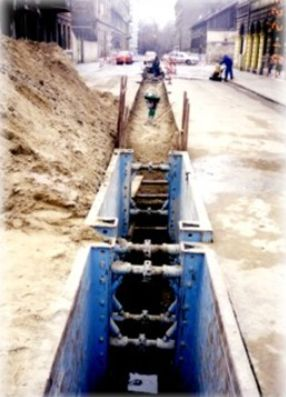


Széles munkagödör dúcolása
Minél szélesebb a gödör, annál hosszabb a dúc – és annál könnyebben kihajlik. Kb. 3 m-nél szélesebb gödröknél már sokkal „masszívabb” merevítés kell: több irányban merevített dúcok, a gödör aljára támaszkodó ferde dúcok, hátrahorgonyzás vagy nagy átmérőjű acél csőtámaszok.
A hosszú dúc ellensége: a kihajlás
Egy nyomott, karcsú rúd a teherbírása kimerülése előtt oldalra kitérhet – ez a kihajlás (kibicsaklás). A rugalmas kritikus erő a dúchossz négyzetével csökken: kétszer olyan széles gödörben a dúc már csak negyedannyit bír.
Ha a hagyományos dúcokat szeretnénk használni, akkor már több irányban is merevíteni kell őket – ez jelentősen megnehezíti a munkavégzést a munkagödörben, hiszen a merevítés elzárja a gödör közepét.
Széles gödörben a vízszintes dúcokat kb. 6 m-enként oszloppal kell alátámasztani a kihajlás ellen. A német DIN 4124 szerint a dúcsorok merevítésének a dúcerők összegének legalább 1/100-át kell felvennie – ezért kerülnek a dúcok közé átlós és sarokmerevítések.
A régi ácsok egyik érve a fenyő dúcok mellett: a túlterhelt lucfenyő dúc hangosan recseg, mielőtt eltörne – figyelmeztet. A DIN szerinti szabványos fa dúcolatban a kerek dúcok legnagyobb kihajlási hossza mindössze kb. 2 m.
Ferde dúcok a gödör aljára
Nem kell feltétlenül szembetámasztani a földfalakat: a falat ferde dúcokkal a munkagödör aljára is meg lehet támasztani. A ferde dúc erejének azonban függőleges összetevője is van – a dúc kifordulhat, ezért a függőleges egyensúlyát is ellenőrizni kell, és a dúcnak kellően laposnak kell lennie.
Előnyösen felhasználható a megtámasztásra az építendő műtárgy alaplemeze is – ilyenkor azonban az alaplemezt szakaszosan kell megépíteni: először a belső része készül el úgy, hogy a szélén rézsűsen még nagyobb földtámaszt (földpadkát) hagynak meg, és ahhoz támasztják a ferde dúcokat – a teljes földkiemelés előtt.
Minden esetben gondot jelent az alapozás és a pincefalak építése, szigetelése, mert a dúcolati rendszert csak akkor lehet elbontani, amikor a pincei szerkezetek (falak és födémek) már elkészültek, és tárcsaként fel tudják venni a földnyomást.
A ferde dúc kihajlását és a dúcfej kapcsolatát; a fal (vagy a tartók) felemelését a függőleges erőből; a dúc talppontjának, ellentámaszának elcsúszását; a földpadka állékonyságát – magas talajvíznél a fiatal alaplemez felúszását is.
Előnyök
- A gödör közepe szabad marad
- Olcsóbb lehet a vízszintes acéldúcoknál
- Nem nyúlik a szomszéd telek alá
Korlátok
- A padka és a dúcok elfoglalják a peremsávot
- Szakaszos lemezépítés, munkahézagok
- Inkább mérsékelt mélységig (egy dúcsor)
Ha van hely – vagy ha nagyon széles a gödör
Passzív hátrahorgonyzás
Ha a munkagödör mellett van hely, a megtámasztó fal a szakadólapon kívül levert I- vagy U-tartókhoz köthető vissza betonacélokkal vagy horgonyrudakkal – ezek a felszín alatt 0,8–1,0 m-re, egy keskeny árokban futnak.
Tovább az 5. fejezethez →Acél csőtámaszok
Szélesebb munkagödrökben dúcként ma leggyakrabban nagyobb átmérőjű acél csőtámaszokat használnak – így a legtöbb esetben nincs szükség közbenső merevítésre.
Tovább az 5. fejezethez →Talajhorgonyok
„Tiszta” munkagödör érhető el hátrahorgonyzással: a megtámasztás a gödör mögé kerül, a munkatér teljesen szabad marad – cserébe a horgonyok a szomszéd telek alá nyúlhatnak.
Tovább az 5. fejezethez →Munkatérhatároló falak
Ha a gödör mélyebb és szélesebb, mint amit dúcokkal kényelmesen szembe lehet támasztani – vagy közvetlenül mellette utca, szomszéd épület áll –, a földfalat már a kiemelés előtt a talajba juttatott falszerkezet tartja meg. Ezek a falak a munkatér feneke alá nyúlnak: a megtámasztást részben vagy egészben a gödörfenék alatti talajba való befogás adja. Kisebb gödörmélységnél konzolosan állnak, mélyebb gödörnél a befogást a kiemeléssel lépést tartva belső kitámasztással (dúcolással), hátrahorgonyzással vagy födémekkel egészítik ki. Ezek a befogott támszerkezetek négy csoportba sorolhatók: hézagos erősítésű falak, szádfalak, cölöpfalak és résfalak – a fejezet is ebben a sorrendben halad.
Hézagos erősítésű falak
Cölöpfalak
Résfal
A hézagos erősítésű falak erősítését sűrűn elhelyezett acélszelvények (I/H) adják, a földnyomást pedig közvetlenül a hézagokban lévő anyag veszi fel; jellemzően ideiglenes szerkezetként épülnek. Ide tartozik a berlini dúcolat, a jet-grouting fal, az erősített önszilárduló zagyfal és a mélykeveréssel előállított fal. A másik három csoportban maga a fal teljes szerkezete a teherhordó: a szádfal egymásba kapcsolódó pallókból, a cölöpfal hézagos, érintkező vagy összemetsző cölöpsorból (a hézagos cölöpfalnál a cölöpök között a talaj átboltozódik), a résfal zagy alatt betonozott táblákból áll.
Hogy melyiket választjuk, azt ugyanazok a szempontok döntik el, mint minden munkatérhatárolásnál: a rendelkezésre álló terület, a talaj, a talajvíz, a nyitvatartás ideje, a környezet beépítettsége (zaj, rezgés, mozgások), a létesítmény mérete és a rendelkezésre álló eszközök.
A berlini dúcolat, a jet-grouting fal, az erősített zagyfal és az erősített mélykevert fal statikailag ugyanúgy működik: a sűrűn elhelyezett acél I/H-szelvények viszik a terhet a támaszokra és a befogásba. A különbség a hézagokban lévő anyag, amely a földnyomást közvetlenül felveszi: fa- vagy betonpalló, illetve lőttbeton; jet-groutinggal előállított talajbeton; önszilárduló zagy; mélykeveréssel előállított talajbeton. Ez dönti el, hogy a fal vízzáró-e.
Siemens (berlini) dúcolat
Talajvízmentes, száraz, nem túl mély munkaárkok és munkagödrök egyik leggazdaságosabb ideiglenes függőleges partfal-megtámasztása: csak ideiglenes munkatérhatárolásként, talajvíz felett alkalmazható. Ott jön szóba, ahol a gödör már túl mély és túl széles a szembedúcoláshoz – 6 m-nél mélyebb és 3–4 m-nél szélesebb gödörnél –, de még nem olyan mély, hogy merev, vízzáró fal kelljen.
- Acéltartók. Sűrűn, 1,5–2,5 m-enként acél I, H vagy összekapcsolt U szelvényeket juttatnak le a talajba – talajtípustól függően veréssel, vibrálással, vagy fúrt lyukba helyezve és kibetonozva. Sűrűbb kiosztást nagyobb terhelés indokolhat.
- Furat és befogás. Zajvédelmi okból ma inkább furatba helyezik a tartókat – így a veréssel nehezen átjárható rétegek sem okoznak gondot. A furat lehet szabadon álló vagy folyadékkal megtámasztott; a tartó behelyezése után mindig gondoskodni kell a furat kibetonozásáról, különösen a kiemelési szint alatt, mert ott dolgozik a befogás.
- Pallózás a kiemeléssel lépést tartva. A hézagokban a talajt a szakaszos kiemelés mellett, párhuzamosan elhelyezett fa- vagy betonpallók (táblák) támasztják meg. A fapallókat hevedergerendák és ékek segítségével feszítik a tartók közé. Pallók helyett acélhálóval erősített lőttbeton is alkalmazható.
- Statikai működés. A tartók függőleges konzolként, vagy mellgerendával összefogva, dúcokkal, talajhorgonyokkal gyámolított többtámaszú tartóként dolgoznak – a fal horgonyozható és dúcolható.
Előnyök
- sokszor felhasználható – a tartók kihúzhatók
- „tiszta” munkateret ad
- könnyen igazodik a gödör alakjához, a közműátvezetésekhez
- furatba helyezve csendes, rezgésszegény
Hátrányok
- nem vízzáró – csak ideiglenes munkatérhatárolásként, talajvíz felett
- nagy élőmunka-igény, ezért egyre inkább kiszorul a teljesen gépesített falakkal szemben
- hajlékony fal: mögötte süllyedés lehet – érzékeny szomszéd mellett csak feltételesen
- a talajban hagyott fapalló elkorhad
A „Berliner Verbau” a berlini metró építéséről kapta a nevét, a XX. század elején terjedt el: levert I-tartók, közöttük kiékelt fapallók. A berlini föld alatti és magasvasutat 1896-tól a Siemens & Halske építette (1902-ben nyílt meg) – a hazai „Siemens-dúcolat” elnevezés valószínűleg erre utal. A talajban hagyott fapallók elkorhadnak, és a fal mögötti talaj akár 20–25 év múlva is megsüllyedhet.
Egy berlini dúcolat 2004-ben a visszatöltés közben omlott be halálos balesetet okozva: a pallók elvesztették a kapcsolatot a talajjal, a kavics kipergett, és hiányoztak a pallók felfüggesztései. A pallókat a visszatöltéssel lépést tartva, alulról felfelé szabad kiszedni.


Jet-grouting fal
A berlini dúcolattal megegyező működésű szerkezet, amelynél az acéltagokat jet-habarccsal kezelt oszlopokba helyezik: a hézagos, érintő vagy összemetsző jet-oszlopokba kis méretű I/H vagy csőszelvény kerül, és gyakran vasbeton cölöpökkel kombinálják. Hazánkban jellemzően szimpla vagy dupla (cementhabarcs, illetve cementhabarcs + levegő) jet-technológiával készül.
A jet-grouting (jethabarcsosítás) lényege, hogy a talajt vagy gyengébb kőzetet egy fúrószáron keresztül nagy nyomású folyadéksugárral megbontják, felaprózzák és kötőanyaggal összekeverik: így talajbeton testek – oszlopok vagy panelek (falak) – jönnek létre.
- Az oszlopátmérő talaj- és eljárásfüggő: szimpla jettel 50–100 cm (agyagban 50–70 cm, homokban 80–100 cm), dupla jettel kb. 120 cm. Forgatás nélküli felhúzással, kétoldali fúvókával V alakú, 180–200 cm-es jet-panel is készíthető.
- Mivel a jetelt talaj a szilárdulásáig igen sűrű folyadék, a behelyezhető acéltag mérete – az oszlop méretétől függetlenül – korlátos: csak a fúrószárral átjárt függély és annak közvetlen, 15–20 cm-es környezete fogadja be.
- Az átmérőnél 10–20 cm-rel kisebb osztás biztosítja a vízzárást: a fal kvázi vízzáró kivitelben is készíthető – nagy előny a berlini dúcolattal szemben.
- Az acéltagokat szilárd „talajbeton” veszi körül: nem kell utólagos furatkitöltés, és összemetsző oszlopoknál pallózás sem.
Acél erősítés nélkül súlytámfalszerű kialakítással is készül – ezt nem soroljuk a befogott támszerkezetek közé.
A kb. 2,5 mm-es fúvókán kilépő cementhabarcs-sugár akár 200 m/s sebességű – a 400 bar nyomás nagyjából 4 km mély óceán víznyomásának felel meg. Egy kb. 10 cm-es furatból így lesz közel 1 m átmérőjű talajbeton oszlop. Dupla és tripla jetnél a talaj felaprózódását levegő és/vagy víz is segíti. A módszer az 1960–70-es években Japánban született.
Az átmérő és a szilárdság a talajtól függ, ezért próbaoszlopokkal kell igazolni. Ha a visszafolyó cementhabarcs útja elzáródik, a túlnyomás megemelheti a talajt és a szomszéd épületet. Hol alkalmazzák? Talajvíz feletti vagy kis mértékben talajvíz alatti kiemeléseknél, ahol cölöp- vagy résfal nem fér el: 1–2 szintes mélygarázsok, utólagos hozzáépítések.


Erősített önszilárduló zagyfal
Az erősített önszilárduló zagyfal (erősített bentonit-cement fal) a berlini dúcolat tartószerkezeti és a résfal vízzárási tulajdonságait egyesíti. A talajt a réseléssel megegyező módon, réselőgéppel (markolóval) – kisebb mélység esetén hidraulikus kotróval – emelik ki, zagymegtámasztással. A résbe ún. önszilárduló zagy (bentonitzagy + cement) kerül. A kívánt mélység elérése és az acél erősítés elhelyezése után nem kerül beton a zagy helyére: a cementtartalmának köszönhetően megszilárduló zagy adja a fal textúráját és vízzárását („egyfázisú” eljárás).
A zagyba sűrűn – jellemzően 1–2 m-es osztásközzel – I/H gerendákat építenek be: ezek adják a nyomatéki teherbírást. A 28 napos korban – a keveréktől függően – jellegzetesen 0,5–1,4 MPa minimális nyomószilárdságú zagy a föld- és víznyomást boltozati hatás révén adja át az erősítő elemeknek.
Ideiglenes, elbontható munkatérhatároló falként használják: általában legfeljebb 7–8 m mély munkatereknél, ahol a fal elbontása szükséges. Kvázi vízzáró munkatérhatárolásra ez az optimális technológia – ha a megtámasztott oldalon nincs jelentős felszíni terhelés vagy süllyedésre érzékeny szerkezet, és a talaj résállékonyság szempontjából kedvező. Az erősítő elemek szükség esetén passzív vagy kis feszítőerejű horgonyokkal, esetleg mellgerenda mentén elhelyezett acél dúcolattal támaszthatók meg. A fal vastagsága legalább 40 cm.
Egy jellemző keverék köbméterenként pl. 920 l víz, 40 kg bentonit és 200 kg (gyakran lassan kötő kohósalak-) cement. A kiemelés a fal elkészülte után kb. 2–4 héttel kezdődhet; a szabaddá váló felületet fagy és kiszáradás ellen védeni kell (pl. fóliával). Egy szádfalhoz képest akár feleannyi acél is elég lehet.


Erősített mélykeveréssel előállított fal
A nemzetközi piacon befogott támszerkezetként egyre gyakrabban alkalmazott megoldás. Nedves mélykeverési eljárással falat képeznek: a talajt helyben keverik össze kötőanyaggal – trenchmix technológiával, CSM (Cutter Soil Mixing) technológiával vagy oszlopszerű keveréssel (pl. a többspirálos colmix) –, majd a friss keverékbe sűrűn acél I/H-gerendákat építenek be: ezek adják a nyomatéki teherbírást. Ideiglenes munkatérhatároló és szivárgásgátló falként használják (elbontható).
A CSM a marótárcsás (hydrofraise) résfalazáshoz hasonlít, de itt csak kötőanyagot visznek be a talajba, és a helyi talajt keverik át: a két pár, ellentétesen forgó marókerék lefelé menet aprítja a talajt (közben kötőanyag-szuszpenziót adagolnak), a talpon visszafordul, és felfelé homogénre keveri. Így folyamatos, acéltagokkal erősített fal alakítható ki; előbb a primer, aztán a közéjük belemaró szekunder táblák készülnek. Oszlopszerű keverésnél jellemzően 1,0–1,5 m átmérőjű talajbeton oszlopok készülnek, legfeljebb 50 m mélyig.
A mélykeverés csendes és vibrációmentes, minimális hulladékkal jár – a helyi talajt nem kell elszállítani –, jó lehetőséget kínál a szennyezett területek rehabilitációjára, és alacsony hőmérsékleten is végezhető. Az oszlopok és táblák tetszőleges elrendezésben helyezhetők egymás mellé, így a módszer kiválthatja a drágább alapozási, talajjavítási eljárásokat. A kötőanyag a javítandó talajtól függően mész, cement, gipsz, granulált kohósalak vagy ezek keveréke. A gépek folyamatosan naplózzák a mélységet, a kötőanyag-mennyiséget és a ferdeséget. A CSM-eljárást a Bauer 2004-ben fejlesztette ki a résfalmaróból. Hátránya, hogy talajfüggő, és nagy gép, keverőtelep kell hozzá.
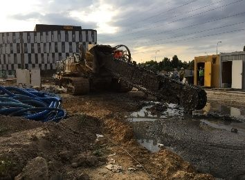


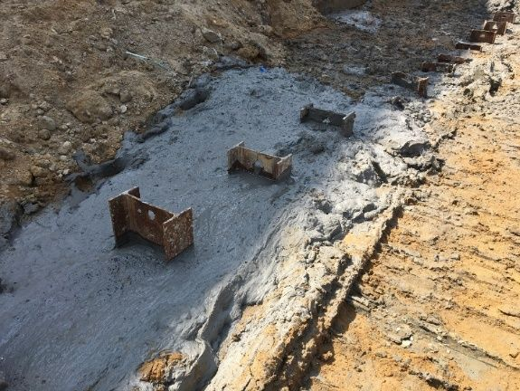


Acél szádfal
A szádfalak veréssel, vibrálással vagy sajtolással lejuttatott, acél vagy vasbeton anyagú, egymáshoz hornyokkal (zárakkal) kapcsolódó, hullámos alakú munkatérhatároló elemek. A hornyos kialakítás miatt teljes vízzáróság érhető el. Tartós vagy ideiglenes szerkezetek: az ideiglenes (acél) szádfalakat visszanyerik, kihúzzák és újra felhasználják.
Leggyakrabban acél szádfalat használnak, különösen ideiglenes munkagödör-határoláshoz: a pallók könnyen verhetők, visszahúzhatók, vízzáró képességük a legjobb. Számos típus létezik – egyenes, félhullámú (U és Z alakú) vagy teljes hullámvonalú –; hazánkban jellemzően az U-hullámprofilú Larssen- és a Z-hullámprofilú Hoesch-típusú pallókat használják. Árvízvédekezésnél CS típusú pallókat is alkalmaznak – ezek átmenetet képeznek a csatornapallók és a szádfalak között.
- Lehajtás: diesel- vagy hidraulikus verőeszköz, illetve – főleg szemcsés talajban – vibrátor. A táblákat lépcsősen egyesével, vagy hatékonyabban 2–4 elemet összefogva verik/vibrálják a talajba; leggyakrabban gyárilag párosával. Lehajtásuk gyors, tömör, kemény talajokon is képesek áthatolni. Puha talajban sajtolás is lehetséges.
- Zaj és rezgés: a szádfalazás hátránya a zaj- és rezgéskeltés. Beépített területen meg kell vizsgálni, nem okoznak-e kárt a lehajtás rezgései a környező építményekben – ezek 20–30 m-re is elhathatnak.
- Akadályok: törmelékes feltöltés, köves rétegek, vékony kőpadok – ilyenkor gyakran előfúrást alkalmaznak.
- Tartós felhasználásnál korrózióvédelem kell: vastagabb keresztmetszet és tűzihorganyzás.
Alkalmazási példák
- élővízzel érintkező munkatérhatároló falak
- közműépítések ideiglenes munkatérhatároló fala
- meglévő utak szélesítéséhez, rézsűjük elbontásához szükséges falak
- szűk hely, nagyon gyors építési idő esetén
- ahol a zaj- és rezgésterhelés megengedhető
Vibrálás: ellentétesen forgó excentertömegek függőleges rezgése „elfolyósítja” a szemcsés talajt a palló mentén. Verés (diesel- vagy hidraulikus kos): kötött, kemény talajban és az utolsó métereken. Besajtolás: a gép a már lehajtott pallókba kapaszkodik, ezek adják a reakcióerőt – rezgésmentes, csendes.


Fa, vasbeton és műanyag szádfal
Fa: ma már nem használatos. 2–6 m mélységig alkalmazták, csak végleges állapotban, mert a visszahúzás körülményes, és a fa roncsolódik. Először vezércölöpöket vertek le, közéjük hajtották a horony-eresztékes pallókat.
Vasbeton: tartós felhasználásra, élővizek mellett, partfalként – elsősorban kikötőkhöz, partvédelemhez. Hátránya a nagy súly – szállításra is méretezni kell (4–8 m hosszú elemek) –, emellett rosszul zárnak és nehezen verhetők be. Gyakran előfeszítettek, ez a súlyt is csökkenti. Diesel verővel hajtják le a talajba, a lehajtást vízöblítéssel segítik.
Műanyag: hazánkban még nem terjedt el. Végleges partfalaknál, kikötőknél, csatornák partjain használják (pl. Geoflex-rendszer): 30 cm széles „nyomott” hullámlemezeket vernek le vibrátoros, vízsugaras berendezéssel, nagyon puha talajban kotrógéppel benyomják. A lemezeket belső és külső szelvényből álló zár köti össze. Előnye a kis súly (kb. 9 kg/m²) – nem kellenek nehéz gépek.
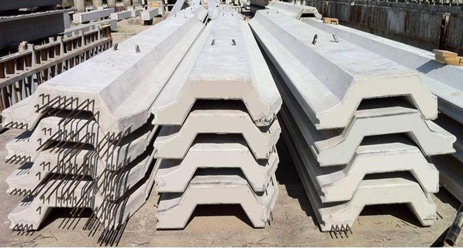
Már a rómaiak is használtak fa szádfalat, és a XIX. századig csak fából készült. Az acél szádfal 1902-ben, Brémában jelent meg (Tryggve Larssen). A tengervíz fröccszónájában egy acélfal 50 év alatt kb. 3,75 mm vastagságot veszíthet – a műanyag nem korrodál, de teherbírása jóval kisebb.
Cölöpfalak
A cölöpfalak hézagos vagy zárt (érintkező vagy összemetsző), jellemzően talajhelyettesítéses fúrási technológiával készülő helyszíni vasbeton cölöpökből álló falszerkezetek. Hazánkban elsősorban CFA cölöpözési technológiát használnak (max. 20–24 m), ritkábban béléscsöves/zagyos fúrt cölöpöt (nagyobb hossz), kisebb gödörmélységnél pedig előregyártott/vert vagy fúrt technológiával készülő mikrocölöpöt. A cölöpfalak tartós és ideiglenes szerkezetként is kialakíthatók: alapvetően munkatérhatároló funkcióval, de egyidejűleg alapozási szerkezetként is.
- Hézagos: hazánkban elsősorban ez a változat terjedt el – főleg nagyon kemény talajokban (agyagokban) vagy puha kőzetekben, talajvíz felett vagy csak szezonális rétegvizekkel érintett földkiemeléseknél, ideiglenes vagy végleges, nem vízzáró munkatérhatároló falként, gyakran szűk városi munkaterek határolására. A kedvező szilárdságú talaj miatt kevesebb cölöp is elég. A cölöpköz jellemzően 20–60 cm, legfeljebb a cölöpátmérő: vállalható mérete a talaj állékonyságától, átboltozódási képességétől függ. A cölöpközökbe leggyakrabban felületszivárgó és betonacél hálóval erősített lőttbeton kerül.
- Érintkező: a cölöpök közvetlenül egymás mellé kerülnek, nincsenek hézagok – mégsem vízzáró megoldás. Akkor választják, ha a talaj önmagában nem állékony (szemcsés talaj), de nincs szükség vízzárásra, vagy statikailag sűrű kiosztás kell.
- Összemetsző: vízzáró fal készíthető vele, de a résfalas megoldással szemben csak speciális esetekben gazdaságos, így ritkán készül. Felül beton vezetőgerenda készül. Minden második cölöp vasalás nélkül készül el, és néhány órával később a közéjük kerülő – kb. 10–12 cm-t a szomszédokba fúró – cölöp készül vasalással: ezek veszik fel a nyomatékot.
- Jet-oszlopokkal kitöltött hézagok: a cölöpök közötti hézagokat jet-grouting oszlopokkal kitöltve nem vízzáró, de vízteleníthető munkaterek alakíthatók ki – az összemetsző cölöpfalakhoz képest kisebb technológiai erőfeszítések árán.
Különösen végleges falaknál gondoskodni kell a cölöpközökben időszakosan megjelenő rétegvizek elvezetéséről: a cölöpfalra legtöbb esetben betonacél hálót rögzítenek és belövik betonnal (lőttbeton), mögötte felületszivárgóval vagy geotextíliával, a cölöpközökben megfelelő védelemmel tervezett dréncsövekkel. A cölöpfal készülhet konzolos kialakításban, de ideiglenes vagy végleges megtámasztásokkal is – acél csőtámaszokkal, talajhorgonyokkal, szerkezeti támaszokkal –, ezek a cölöpöket felül összefogó vasbeton fejgerendához, mélyebben a cölöpök oldalára rögzített mellgerendákhoz kapcsolódnak. Leggyakoribb alkalmazási példák: városi mélyépítési munkaterek (pl. mélygarázsok, aluljárók) és útépítési projektek bevágásainak végleges megtámasztása.
Összemetsző falnál a primer cölöpök betonja gyakran szándékosan gyengébb vagy lassan kötő (akár 1–3 MPa, illetve 10–20 MPa) – hogy a szomszédos szekunder cölöp bele tudjon fúrni. A szekunder cölöp mindig teljes értékű, vasalt vasbeton.
A Paks II munkagödrét horgonyzott, 88 cm-es cölöpökből álló összemetsző cölöpfal határolja. Budapesti példa: a VII. kerületi Kertész utcai „Kertész25” társasház munkagödrét CFA-cölöpökből készült hézagos cölöpfal határolta.


Réselt fal (résfal)
A résfalak függőleges falú árok (rés) vasalásával és kibetonozásával jönnek létre. Leggyakrabban földmegtámasztásként alkalmazzuk, ritkábban alapozási szerkezetként – a mélyalapozásoknál részletesen tárgyaltuk. Munkatérhatárolásként akkor választják, ha a gödör mély, a talajvíz magasan áll, a szomszédos épületek mozgása kritikus, és a fal a végleges szerkezet része lehet – ilyenkor a munkatérhatárolás egyben az alapozási rendszer is. Megtámasztása horgonyokkal, csőtámaszokkal vagy top-down födémekkel történik (lásd a megtámasztó szerkezeteknél).
- Résvezető gerenda. A rés két oldalán 1,0–1,5 m magas, 20–25 cm széles vasbeton gerendapár készül: vezeti a réskanalat, megtámasztja a felső laza talajt, és ez a kitűzési alapbázis.
- Résiszap. A résbe folyamatosan bentonitos résiszap (zagy) kerül: víz és benne diszpergált bentonit (kolloid agyagféleség). Megakadályozza a talajvíz beáramlását, és ellensúlyozza a rés oldalfalainál ható víz- és földnyomást – ez biztosítja a résállékonyságot. Keveréséhez a helyszínen külön keverő-ülepítő telep kell.
- Réstáblák kiemelése. Két eljárás létezik: markológép (réskanál) vagy marókerekes hydrofraise (réshasító). Ez utóbbinál a talajt a bentonitos zaggyal együtt marótárcsák, kések, görgők segítségével szivattyúzzák ki; a telepen szétválasztják a talajt és a zagyot, a kitermelt talajt elszállítják, a megtisztított zagyot visszajuttatják a résbe. A tábla végére szakaszoló palló kerül, belefűzött vízzáró duzzadószalaggal.
- Vasalási armatúra elhelyezése. A darura függesztett armatúrát a résbe engedik, és a résvezetőn rögzítik.
- Betonozás. Betonozócsövön át, alulról felfelé betonoznak: a beton kiszorítja a zagyot.
A markolás történhet szakaszos réseléssel – ekkor minden második réstábla készül el először, és csak azután a közbenső panelek –, vagy lehet folyamatos.
Közel 10 000 m²-es, kb. 16 m mély munkagödör négyszintes mélygarázshoz a Duna partján: 80 cm vastag, két horgonysorral megtámasztott résfal, amely a vízzáró agyagba kötve a talajvizet is kizárja.
Megtámasztó szerkezetek
A munkatérhatároló falak rendszerint a munkatér feneke alá nyúlnak: befogásuk a passzív földellenállás révén egy támaszt ad. Konzolosan – egyéb megtámasztás nélkül – azonban csak pár méteres (max. 4–6 m) kiemelésig állékonyak. Mélyebb gödörnél egy vagy több szinten meg kell támasztani őket, így határozatlan, többtámaszú tartók alakulnak ki. A megtámasztás kétféle lehet: a fal mögé nyúló hátrahorgonyzás (talajhorgony, passzív hátrahorgonyzás) vagy a munkatérben elhelyezett belső kitámasztás (acél csőtámasz, támaszfödém).
A falak statikai vázai
A munkatérhatároló falak statikailag négy fő típusba sorolhatók:
- szabadon álló, befogott (konzolos) fal,
- egy szinten megtámasztott, szabadon támaszkodó fal,
- egy szinten megtámasztott, befogott fal,
- több szinten megtámasztott, szabadon támaszkodó fal.
A befogási mélység függvényében alakul ki tényleges befogás, vagy csak „támaszkodó” szerkezet: kis befogási mélységnél alacsony a befogási nyomaték. Minél mélyebb a gödör, annál inkább szükség van egy vagy több szintű megtámasztásra – a fal így határozatlan, többtámaszú tartó.

Próbáld ki a fal-laborban, hogyan változik a szükséges befogás, a támaszerő és a nyomaték a statikai váztól függően! Figyeld meg: egy horgony a konzolos falhoz képest drasztikusan csökkenti a befogási mélységet és a nyomatékot, a befogott talp pedig hosszabb falat, de kisebb mezőnyomatékot ad.
Ezekkel a számításokkal részletesebben a Földalatti műtárgyak, mélyalapozás tárgyban foglalkoztok. A fal-labor a klasszikus határegyensúlyi módszereket (Blum-féle befogott fal, szabadon támaszkodó fal, egyenértékű tartó, Peck-féle látszólagos földnyomás) mutatja be – a mai tervezés rugalmasan ágyazott tartó- és végeselemes modellekkel dolgozik.
Talajhorgonyok
A horgony a megtámasztott szerkezetről átadódó húzóerőt a teherviselő közegre (talajra, kőzetre) továbbítani képes szerkezet. A talajszegekhez hasonló, de lényegi különbségek vannak: nem a teljes hosszán veszi fel az erőt, jóval nagyobb (átmérőjű és hosszú), és teherbírása is legalább egy nagyságrenddel nagyobb.
Sokféle talajhorgony van, de leggyakrabban előfeszített, fúrt, injektált talajhorgonyokat használunk. Előnyük, hogy a munkagödör mögé nyúlnak, így „tiszta” építési terület marad – nincs dúc a gödörben.
A horgonyok rendszerint szomszédos ingatlanok alá nyúlnak – sokszor 15–20 méterre is. Ez egyrészt jogi problémákat vet fel (tulajdonosi hozzájárulás), másrészt a horgony meglévő műtárgyakba (pincébe, közműbe, alapozásba) ütközhet. Ahol a horgony később zavarna, kiszerelhető (pászmáiban visszahúzható) horgonyt is alkalmaznak.
Mire használják?
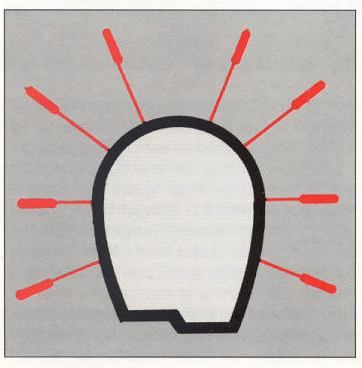
Alagútfalazat és a külső kőzettömeg együttdolgoztatása Felúszni akaró szerkezetek lehorgonyzása
Felúszni akaró szerkezetek lehorgonyzása Stabilizálás a vízáramlás okozta erők ellen
Stabilizálás a vízáramlás okozta erők ellen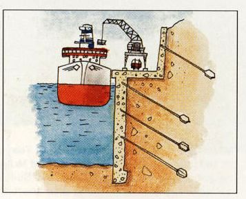
Kikötői partfalak hátrahorgonyzásaA horgony részei
Hogyan készül?
- Kiemelés a horgonysor alá – kb. 0,5 m-rel a tervezett horgonyszint alá; szükség esetén heveder, mellgerenda.
- Fúrás 15–30°-os hajlással, béléscsővel vagy fúróiszappal megtámasztva.
- A feszítőelem behelyezése: 3–7 pászma (vagy Dywidag-rúd) távtartókkal; a szabad szakaszon védőcsőben, mellettük a mandzsettás injektálócső.
- Elsődleges injektálás alulról felfelé, miközben a béléscsövet kihúzzák.
- Utóinjektálás nagy nyomással a mandzsettás csövön át – a habarcstest megreped, kiszélesedik.
- Szilárdulás 8–12 napig.
- Feszítés és próbaterhelés üreges feszítősajtóval, lépcsőkben – minden horgonyról próbaterhelési jegyzőkönyv készül.
- Lekötés a tervezett igénybevétel 80–90%-án: az ékek rögzítik a pászmákat a horgonyfejben. Jöhet a következő kiemelési szint.
| Osztályozás szempontja | Típusok |
|---|---|
| Élettartam | ideiglenes (T ≤ 2 év, pl. dúcolás) · tartós, mint a szerkezet (pl. hídfő) – korrózió! |
| Befogás módja | injektált szakasszal (köpenymenti nyírás) · mechanikus szerkezettel („esernyős”) · expandált testtel |
| Felszíni horgonyok | horgonycölöphöz rögzítve (passzív) |
| Teherviselő elem | acél feszítőkábel (általános, nagy erőre) · acél magrúd (csavarbordás, kisebb erőre) · üveg- vagy szénszálas rúd (FRP, korrózió ellen) |
| Készítés | gyártmány, üzemben készítve · helyszíni szerelés (csak ideiglenes!) |
Hazánkban a fúrt, injektált talajhorgonyok szinte mindig ideiglenes funkcióval, legfeljebb 2 éves élettartamra készülnek. Az állandó horgonyok elsősorban a szigorúbb korrózióvédelemben (teljes hosszon védőcső, habarcs) és az ellenőrizhetőség, utánfeszíthetőség igényében térnek el – partfalaknál, hegyvidéki kőzetrézsűknél, hídfőknél.
Tervezd meg a horgonyt!
A befogott szakasznak az aktív csúszólapon túl kell lennie – ezért a horgony hossza a gödör mélységével gyorsan nő. Figyeld a telekhatárt és a szomszéd pincéjét!
Próbaterhelés és lekötés
Minden egyes horgonyról próbaterhelési jegyzőkönyv készül: a feszítősajtó lépcsőkben, ciklusokban terheli a horgonyt, és mérik a fej elmozdulását. A rugalmas megnyúlásból az is ellenőrizhető, hogy a szabad szakasz valóban szabadon nyúlik-e. A végén a horgonyt a tervezett igénybevétel 80–90%-ára lekötik.
Az injektált talajhorgony 1958-ban született egy müncheni kavicsos munkagödörben: Karlheinz Bauer a megbízhatatlanul rögzíthető horgonyrudakat egyszerűen beleinjektálta a kavicsba. Előfeszített kőzethorgonyt már 1934-ben használtak egy algériai gátnál. Egyetlen Ø15,7 mm-es pászma szakítóereje kb. 279 kN – közel 28 tonna.


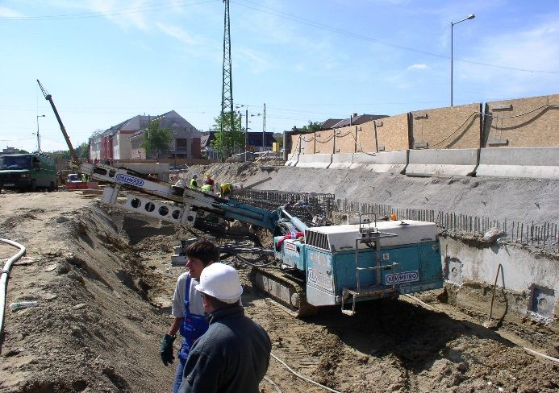


Passzív hátrahorgonyzás
A passzív horgony lényege, hogy a falszerkezet megtámasztását egy, az általa megtámasztott földtömeg mögött kellő távolságban lévő szerkezethez – pl. egy másik falhoz vagy cölöpsorhoz – kapcsolódó, húzóerő felvételére alkalmas elem biztosítja.
Ha a munkagödör mellett van hely, a szakadólapon kívül levert I vagy U tartókhoz, esetleg cölöpökhöz betonacélokkal vagy horgonyrudakkal – a felszín alatt 0,8–1,0 m-re, egy keskeny árokban elhelyezve – hátrahorgonyozható a fal. Nagyobb gödröknél (nagyobb erőknél) cölöpfalhoz, résfalhoz horgonyoznak, és a kikötéshez vasbeton gerendát használnak.
A feszített horgonyokhoz képest a különbség: feszítőerő hiányában a fal várható mozgásai nagyobbak, jellemzően néhány centiméteresek. Végleges szerkezetként vasbetonból vagy korrózióvédett nagyszilárdságú acélrudakból készülhetnek. Különösen partfalak megtámasztásánál, illetve közúti nyitott aluljárók mélyebb szakaszainál gyakori; városban a helyhiány miatt ritkább.

A horgonyrudakat nem feszítik elő: a feszítőzárral csak a lazaságot veszik ki (kézzel, nagy rudaknál sajtóval kb. 30–60 kN-nal), majd a rudakat homokkal, tömörítve visszatöltik. A rúd csak akkor kap erőt, amikor a kiemelés során a fal néhány centimétert elmozdul, és a horgonyfal előtt kialakul a passzív földellenállás. A dublini kikötőben például akár 29 m hosszú, M140-es horgonyrudak tartják a partfalat.
Acél csőtámaszok
A szélesebb munkatérhatárolások közel derékszögű sarkaihoz közel eső, vagy egymástól nem túl távoli szemközti falszakaszainak összetámasztására leggyakrabban acél csődúcokat alkalmaznak. Hazai viszonyok között általában akkor gazdaságos:
- ha talajhorgonyok készítésére nincs lehetőség a nem megfelelő altalajviszonyok vagy a már beépített szomszédos földalatti terek miatt;
- ha a tervezett munkatér mélysége meghaladja a 15–20 m-t, és a szomszédos, jelentős felszínmozgásoktól védendő szerkezetek miatt horgonyokkal nem építhető kellően merev, kis alakváltozású fal.
Ezért elsősorban szűk munkatereknél – közúti, gyalogos aluljárók, kis alapterületű vízépítési műtárgyak – vagy nagyon mély városi munkatereknél, pl. metróállomásoknál népszerű (így készült az összes M4-es metróállomás is – néhány állomásnál a födémek is részt vettek a megtámasztásban, lásd lent a top-down módszernél). A munkatéren belüli munkát nehezíti, de alacsony élőmunka-igénye, újrafelhasználhatósága és a horgonyzás egyre gyakoribb ellehetetlenülése miatt hazai előtérbe kerülése várható.
A csőtámok általában a falak felső síkján vagy közbenső szintjein húzódó fej- vagy mellgerendákhoz kapcsolódnak, így egy dúc több falelemet (réspaneleket, cölöpöket, szádpallókat) támaszt meg. A falhoz a dúc homloklemezéhez kapcsolódó fúrt-ragasztott rögzítőelemekkel, vagy a falba előre bebetonozott homloklemezhez kötik.
A londoni Crossrail Paddington állomásnál a dúcerők naponta ingadoztak: reggel 8 körül voltak a legkisebbek, este 7 körül a legnagyobbak. A hőmérsékleti többleterő a dúc tervezési terhének akár 50%-a is lehet. Egy londoni gödörben (Merchant Square) 49 m-es fesztávú, 1,22 m átmérőjű, 500 t teherbírású dúcok dolgoztak.
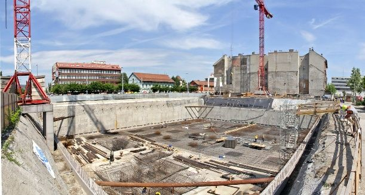
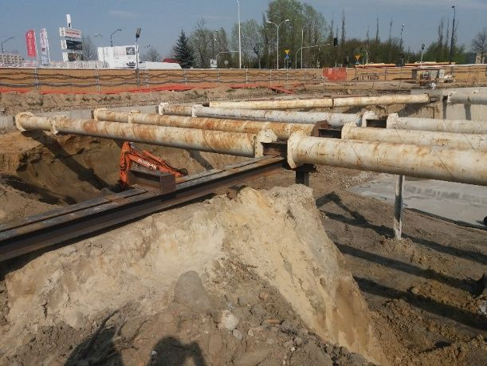


Támaszfödém – a milánói („top-down”) módszer
Először a munkatérhatároló szerkezeteit (résfal, cölöpfal) készítik el. Ha közbenső támaszok-pillérek is vannak, felülről elkészítik azok alapozását (cölöpözését) és elhelyezik a pilléreket. Ezután földzsaluval elkészül a felső födém, amely tárcsaként megtámasztja a határolófalakat. A további szintek építése bányászati módszerekkel történik – a födémekben kihagyott földkiadó nyíláson, távolabbra épített szállítóalagúton, vagy a műtárgy mellé épített „zseben” keresztül.
Technikai nehézségek
A támaszfödém alátámasztását (pilléreket) előre, takarásban kell elkészíteni – a pontosság nagyságrenddel elmarad a hagyományos szerkezetépítésétől.
A földkitermelést a támaszfödém alatt, szűk térben kell végezni.
A zárt munkatér szellőzését, bevilágítását biztosítani kell.
Az előre elkészült pillérekhez utólag kell kapcsolni a födémeket; az alépítmény falai a födémek takarásában, utólag készülnek – a monolitikus kapcsolatok nehezen alakíthatók ki.
Előnyök
Miért éri meg?
- lerövidül az építési idő: épületnél a fel- és alépítmény párhuzamosan épülhet
- a környezet zavarása javarészt megszűnik, a felszín hamar helyreállítható
- a födémek zsaluállványzat nélkül, földre fektetve épülhetnek
- a födémtámaszok nagy merevséget adnak – kis falmozgás
Az M4-es metró két állomása – a Bikás park (Tétényi út) és az Újbuda-központ (Bocskai út) – top-down, „milánói” módszerrel épült: itt a falakat a födémek is megtámasztották. A módszer felszíni lezárást csak kb. 6–8 hónapra igényel állomásonként. A nevét a milánói M1-es metró (1957–1964) építéséről kapta, ahol először alkalmaztak nagy léptékben résfalakat földalatti vasútnál.

Talajszegezés
Lépcsősen, felülről lefelé haladva egy raszterben szegeket fúrnak, vernek vagy lőnek a földfalba, a szegekre betonacél hálót rögzítenek, és a felületet lőttbetonnal borítják. A szegekkel „összevarrt” földtömeg úgy dolgozik együtt, mint egy súlytámfal – a talaj tartja meg önmagát.
Az elv: a talaj tartja meg önmagát
A szegezett fal nem a talaj elé épített szerkezet, hanem a talaj megerősítése. A sűrűn elhelyezett, nem feszített acélszegek a kis talajmozgások hatására húzást kapnak, és a teljes hosszukon súrlódással adják át az erőt. Így egy súlytámfal-szerű, együttdolgozó földtömeg alakul ki, amely megfelelő szeghossz esetén nagyobb magasságú munkaterek határolására is alkalmas.
A gödör felülről lefelé, fogásonként mélyül: minden fogásban kiemelés → szegek → (víztelenítés) → háló → lőttbeton, és csak a lőttbeton szilárdulása után jöhet a következő fogás. A módszer a megtámasztó szerkezetek közül a talajhorgonnyal rokon, de attól lényegesen különbözik (5.5).
Általában ideiglenes munkatérhatárolásra készül – például résfalak felett a felső 2–3 méteren –, de végleges rézsűstabilizálásra is használják; ekkor korrózióvédelem kell.
H mélységű munkagödör esetén a szegek szükséges hossza a talaj függvényében 0,6–1,2 H között változik. Jellemzően a szegek rasztertávolsága 0,5–1,0 (1,5) méter.
Az első szegezett falat 1972-ben építették Franciaországban, Versailles közelében: egy vasút szélesítésénél egy 18 m magas, 70°-os homokbevágást szegeztek meg. A francia CLOUTERRE kutatási program ajánlásai 1991-ben jelentek meg; a ’80-as évek végén Franciaországban évente már kb. 80 000 m² szegezett falat építettek.
Építés fogásról fogásra
Építsd fel a falat lépésenként! Állítsd a mélységet, a szeghosszt és a rasztert – a csúszólapon túlnyúló szegvégek (piros pontok) mutatják, hogy a szeg valóban „belekapaszkodik” a nyugvó talajba.
A következő fogást csak akkor szabad kiemelni, ha a lőttbeton legalább 72 órás, vagy elérte a kb. 10,5 MPa szilárdságot. A fogás ideje alatt a szabadon álló földfalnak magától kell megállnia – ezért kell a talajnak rövid ideig 1–2,5 m magas függőleges falban állékonynak lennie.
Szegek, háló, lőttbeton, víz
Négy szegtípust különböztetünk meg: vert, fúrt-injektált, jetelt és (esetleg) csavart szegeket. Anyaguk leggyakrabban 20–28 mm-es betonacél, de készülhetnek acélcsőből vagy acél szegekből is. Leggyakrabban – ha lehetőség van rá – a betonacél szegeket „puskákkal” verik be.
Háló
Jellemzően 6–8 mm átmérőjű, 150 × 150 mm-es raszterű betonacél háló, amelyet a szegekhez rögzítenek (pl. laposacél darabbal hegesztik). Állékony, agyagos talajban a lőttbeton kéreg el is hagyható – ekkor a háló alá geotextília kerül.
Lőttbeton
A felületet 8–15 (20) cm vastag lőttbetonnal borítják. Nedves eljárásnál a kész betont szivattyúzzák és a fúvókánál levegővel lövik ki; száraz eljárásnál a vizet a fúvókánál adják hozzá (több a visszapattanás és a por).
Víztelenítés
Rétegvizek esetén a lőttbeton mögé felületszivárgót tesznek (kivezetésekkel), vagy 1–3 m-es raszterben átfúrják a falat, dréncsövet helyeznek el, és a vizet átvezetik a falon – nem alakulhat ki visszaduzzasztás és víznyomás.
Korrózióvédelem
Végleges szegeknél korrózióvédelem kell, pl. epoxi bevonat, polietilén tok (bordás PE-cső, a szeg körül habarccsal) vagy katódos védelem. A nemzetközi gyakorlatban a PE-tokozás és a megfelelő habarcstakarás a leggyakoribb.
Kihúzó próba
A teherbírást kihúzó próbákkal ellenőrzik: üreges sajtó húzza ki a szeget a falról. Előbb próbaszegeken (alkalmassági vizsgálat), majd szúrópróbaszerűen a beépített szegeken – pl. a német gyakorlatban a szegek legalább 3%-án, talajtípusonként legalább 3 db-on.
Gépek
Egyszerű, kis gépek: kotró a fogások kiemeléséhez, lánctalpas fúrógép vagy kotróra szerelt fúróárboc, habarcskeverő és -szivattyú, lőttbeton-gép. Akár darura függesztett állványról is dolgozhatnak.
Létezik ballisztikus szegvető: egy kotróra szerelt, sűrített levegős „ágyú” egyetlen lövéssel juttat egy kb. 6 m hosszú, 38–40 mm-es acél- vagy üvegszálas rudat a rézsűbe, kb. 350–400 km/h sebességgel – fúrás és kitermelt föld nélkül. Elsősorban sekély rézsűcsúszások gyors megfogására használják.
Hol alkalmazható?
Gyakorlatilag mindenféle talajban alkalmazható – néhány fontos kivétellel. Tippeld meg kártyánként, mielőtt felfordítod!
Előnyök
- relatíve alacsony költség
- egyszerű, kis gépek – szűk helyen is
- könnyen variálható, módosítható (szükség esetén)
- rugalmas szerkezet, jól adaptálható a különféle talajokhoz
- teherbírási tartalék, rezgésmentes építés
Hátrányok
- a talajnak 1–2,5 m-ig függőleges falban meg kell állnia
- magas és áramló talajvíz esetén nem alkalmazható (csak folyamatos víztelenítés mellett)
- a vízelvezetés nehezen oldható meg
- városban a sűrű szegmező – sokszor közterület, utca alá nyúlva – közművekbe ütközhet
- rugalmas fal: nagyobb mozgás, mint egy horgonyzott falnál
Szeg vagy horgony?
Első ránézésre hasonlóak: mindkettő a talajba fúrt, injektált acélelem, amely húzást visz. A működésük azonban alapvetően más – nézd meg, hogyan oszlik el bennük az erő!
| Talajszeg | Talajhorgony | |
|---|---|---|
| Feszítés | nincs – passzív elem | előfeszített (a tervezett erő 80–90%-ára) |
| Erőátadás | a teljes hosszán | csak a befogott (injektált) szakaszon; a szabad szakasz védőcsőben |
| Kiosztás | sűrű, 0,5–1,0 (1,5) m-es raszter | ritka, horgonysoronként, fej- vagy mellgerendán |
| Hossz | 0,6–1,2 H | legalább 8 m (4 + 4 m), legfeljebb 25–30 m |
| Teherbírás | kisebb | legalább egy nagyságrenddel nagyobb |
| Vizsgálat | próbaszegek + szúrópróba | minden horgonyról próbaterhelési jegyzőkönyv |
| Működés | „összevarrt” földtömeg, súlytámfal | a fal megtámasztása a csúszólapon túli talajra |


Különleges megoldások
Mit tegyünk, ha a talajvizet semmilyen fallal nem tudjuk kizárni, ha a munkatér egy folyó közepén van, vagy ha a vízszintet tilos lesüllyeszteni? Ilyenkor jönnek a különleges megoldások: a talajt megfagyasztjuk, a folyóban gátat építünk, vagy a gödör alját víz alatt betonozzuk le – és lehorgonyozzuk.
Fagyasztott fal
talajfagyasztás · ground freezing · BodenvereisungA talajfagyasztás lényege, hogy a talaj pórusvizét megfagyasztjuk: a jég összeragasztja a szemcséket, és a talaj maga lesz a munkatérhatároló fal – egyszerre vízzáró és teherbíró. Bármilyen víztelített talajban működik (homok, iszap, vegyes feltöltés), szabálytalan alaprajzzal és nagy mélységben is, vegyszer nem kerül a talajba, és a fal teljesen visszafordítható: a hűtés leállítása után felenged.
A kiemelés vonalán kívül, általában 2–3 m-re, egy vagy több sorban, jellemzően kb. 1 m-es osztással (0,9–1,5 m) fagyasztócsöveket fúrnak le. A fúrás pontossága kulcskérdés: ha két cső mélyen eltávolodik egymástól, rés maradhat a falban. A zárt végű külső csőben nyitott ejtőcső van – a hűtőközeg a belsőben lefelé, a gyűrűs térben felfelé áramlik. A csövek között hőmérő-csövek ellenőrzik, hogy a fal összezárt-e.
A munkafolyamat
- Tervezés: rétegsor, víztartalom, sótartalom – és a legkritikusabb: a talajvíz áramlási sebessége.
- Fúrás, csövek: fagyasztócsövek és hőmérő-csövek egy vagy több sorban, a furatok ferdeségének bemérésével.
- Hűtés: sólével (hűtőgép, zárt kör, kb. −30 °C) vagy folyékony nitrogénnel (−196 °C, tartálykocsi, a gáz elpárolog).
- Aktív fagyasztás: a csövek körül jéghengerek nőnek, majd összefüggő fallá zárnak; ezt a hőmérséklet és a belső víznyomás emelkedése jelzi.
- Kiemelés a fagyott fal védelmében, rövid szakaszokban, azonnali lőttbeton (vagy elemes) ideiglenes biztosítással.
- Fenntartó fagyasztás a végleges szerkezet elkészültéig – az indító energia kb. 30–50%-ával. Gyakori kombináció: gyors indítás nitrogénnel, fenntartás sólével.
- Felengedés: a hűtés leállítása után figyelni kell a fagyemelés utáni olvadási süllyedésre.
Előnyök
- egyszerre vízzáró és teherbíró
- szinte bármilyen víztelített talajban, nagy mélységben is
- szabálytalan alaprajzhoz, alagútból is fúrható
- nem kerül vegyszer a talajba, teljesen visszafordítható
Hátrányok
- drága és energiaigényes, sólével lassú
- áramló talajvíz meghiúsíthatja a záródást
- fagyemelés, olvadási süllyedés a szomszédban
- a fagyott (főleg agyagos) talaj kúszik; pontos fúrás kell
- nitrogénnél zárt térben fulladásveszély
Az állomás dobozát a felszínről építették; a Duna-part alá nyúló peronalagutak bányászati módszerrel (NATM), talajfagyasztás védelmében készültek. A fagyasztócsövek helyzetét 3D-s fúrólyuk-felméréssel ellenőrizték.
Az első mesterséges talajfagyasztást 1862-ben, Dél-Walesben alkalmazták aknamélyítésnél. Friedrich Hermann Poetsch 1883-ban szabadalmaztatta az eljárást: futóhomokban mélyített aknát fagyasztással. Ma alagutak keresztjáratainál, folyók alatti alagutaknál, TBM-indítóaknáknál és résfalhézagok utólagos tömítésénél is használják.
Gátak élővízben
cofferdam · FangedammHa folyóban vagy tóban kell száraz munkatér – például egy hídpillér alapozásához –, a munkaterületet körbezárják, és kiszivattyúzzák belőle a vizet. A „cofferdam” szó a latin cophinus, azaz kosár szóból ered. A gátnak koronájával legalább kb. 0,9 m-rel (illetve a várható hullámmagasságnál jobban) a mértékadó vízszint fölé kell érnie – ez a szabadmagasság.
Föld- vagy kőszórásos gát
Sekély, lassú vízben; agyagmaggal vagy szádfallal tömítve. Olcsó, de széles: szűkíti a medret, és erodálódik.
Egyfalú, merevített szádfalgát
Szádfalgyűrű belső merevítő keretekkel – tipikusan hídpillérnél, víz alatti betondugóval.
Kétfalú, töltött szádfalgát
Két szádfal, köztük homok/kavics töltés, átkötő rudakkal: súlytámfal, belül nem kell dúc.
Cellás szádfalgát
Homokkal töltött acélcellák (Ø 8–30 m): önálló gravitációs fal mély vízben, hosszú szerkezetnél.
Hídpillér szádfalas gátban – lépésről lépésre
- Uszály, úszódaru vagy szerelőhíd; vezetőcölöpökre kerül a merevítő keret – ez egyben a szádfalverés sablonja.
- Szádfalverés a sodrás felőli oldal közepéről indulva, két irányba, lépcsősen; a gyűrűt nem a sarokban zárják.
- Víz alatti kiemelés markolóval – a víz bent marad, ellensúlyozza a külső nyomást; szükség esetén alapcölöpök.
- Víz alatti betondugó kontraktor eljárással: a cső vége végig a friss betonban marad, a beton alulról, „párnaként” emelkedik.
- Szilárdulás (néhány nap) után leszivattyúzás; a víznyomás összeszorítja a zárakat, a szivárgás csökken. Közben újabb dúcszintek kerülhetnek be.
- A pillér építése szárazon, végül visszatöltés, elárasztás (víznyomás-kiegyenlítés), a keretek bontása és a pallók kihúzása.
Leszivattyúzáskor alulról a teljes víznyomás hat a gödör aljára. Ha a betondugó (és a cölöpökhöz való tapadása) kevés, a fenék másodpercek alatt felszakadhat, és a víz elönti a munkateret. Horgonyzás nélkül a betondugó vastagsága nagyjából a víztelenített mélységgel azonos nagyságrendű.
Az M0 északi Duna-hídjának mederpillérei a folyami hidaknál bevált vasbeton kéregelemes módszerrel épültek: a kéregelemekre csavarozott 5 m magas acél őrfal mellett a munkatér a 101,00 mBf építési vízszintig szárazon tartható volt, a kéregelemek pedig zsaluzatként bebetonozódtak. A cölöpöket összefogó alaptest a víz alatti betonozással együtt 4,5 m magas.
Víz alatti alaplemez lehorgonyzással
UnterwasserbetonsohleHa a talajvíz magasan van, a vízzáró réteg nagyon mélyen, és a vízszintet nem szabad lesüllyeszteni (a szomszéd épületek süllyedése, a fák kiszáradása vagy vízjogi tilalom miatt), a munkagödröt víz alatt emelik ki. Az alját víz alatti betonlemez zárja, amelyet sűrű rácsban készülő húzott cölöpök (horgonyok) tartanak lent a felhajtóerő ellen.
Az építés sorrendje: körbezárás szádfallal →
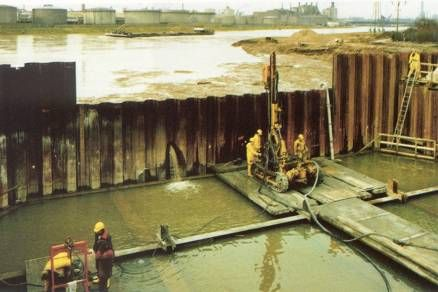

A berlini Lehrter Bahnhof (ma: Berlin Hauptbahnhof) munkagödreit 1,5 m vastag víz alatti betonlemez zárta le, amelyet 6500 GEWI-cölöp rögzített 2,7 m-es rácsban (Ø 63,5 mm-es rudak, 17,5–26,4 m hosszan). A Potsdamer Platzon a 90-es években kb. 24 000 m²-en, 20 m mélyen emeltek ki víz alatt – egész „mesterséges tavak” keletkeztek a város közepén.
Előnyök
- nincs talajvízszint-süllyesztés: a szomszédok nem süllyednek
- vékony (1–1,5 m) lemez a sok méter helyett
- kevés maradék szivárgás
Hátrányok
- búvármunka, kényes víz alatti betonozás
- sok húzott cölöp, lassú munkaciklus
- a lemez–horgonyfej kapcsolat kritikus
3D gödörtervező
Rakd össze a saját munkagödrödet! Válassz talajprofilt, határoló falat és megtámasztást, add meg a mélységet, a talajvizet és a szomszéd épület távolságát – majd ásd ki a gödröt. Az ellenőrző lista azonnal jelzi, mi működik, mi kockázatos és mi nem megy.
8 m mély gödör, a talajvíz −5 m-en. Mi történik a kiemelés végén? Kapcsold be a víztelenítést – és figyeld a szomszéd épületet. Utána próbáld szádfallal.
Hézagos cölöpfal kemény agyagban, 8 m mélyen, horgony nélkül. Húzd a mélységet 4 m-től felfelé: hol vált a lista sárgára, majd pirosra? Adj hozzá horgonysort!
Résfal két horgonysorral, a szomszéd ház 3 m-re. Kapcsold be a röntgent! Ezután válts csőtámaszra – és növeld a gödör szélességét 30 m fölé.
Talajszegezés puha, telített agyagban, a talajvíz 2 m-en. Miért piros szinte minden? Próbáld ki ugyanezt a budai kemény agyagban.
A lista szabályai: konzolos fal max. 4–6 m; a berlini dúcolat, a hézagos cölöpfal és a talajszegezés nem vízzáró, ezért csak talajvíz felett használható – ha a talajvíz a kiemelési sík fölé ér, víztelenítés kell; a zagyfalat általában legfeljebb 7–8 m mély munkatérhez használják; a szádfal lehajtásának rezgése 20–30 m-re is elhathat; a horgonyok 15–20 m-re a szomszéd telkek alá nyúlhatnak, a teljes hossz legfeljebb 25–30 m; a csőtámasz 25–28 m felett közbenső alátámasztást kíván, 10–15 m felett a hőtágulás meghatározó. A támaszszintek számát egy egyszerű, szemléltető ökölszabály becsüli – valódi tervezéshez földnyomás- és szerkezeti számítás kell (Földalatti műtárgyak tárgy).
Melyiket válasszam?
Nincs „legjobb” munkatérhatárolás – csak az adott helyre legjobban illő. A határolás módja a rendelkezésre álló területtől, a talajtól, a talajvízviszonyoktól, a nyitvatartás idejétől, a környezet beépítettségétől, a létesítmény méreteitől és a rendelkezésre álló eszközöktől függ – és sokszor több megoldás kombinációja adja a választ.
A falszerkezet és a megtámasztás nem független: egy hajlékony berlini dúcolat érzékeny szomszéd mellett merevebb megtámasztást kíván, egy vízzáró fal pedig csak akkor ér valamit, ha a vízzáró rétegbe köt – vagy ha a gödör alját is lezárjuk. A víztelenítést mindig a munkatérhatárolással együtt kell megtervezni, és egyes rendszereknél (pl. résfal) a határolás egyben az alapozás is.
Te vagy a tervező!
Nyolc valós helyzet – mindegyikhez egy jó megoldás tartozik. Válassz, és olvasd el az indoklást!
Záróvideó: mélygarázs munkagödre
Kétszintes mélygarázs talajvíz alatt, közvetlenül a telekhatáron álló házak mellett – melyik megoldást választanád? A videó végigviszi a döntést, majd összefoglalja a sorozat összes technológiáját.
Videótár
Mind a 13 animációs videó egy helyen – mindegyik 2–2,5 perc, mindegyik más zenével. A lejátszóban Szóköz = szünet, F = teljes képernyő, Esc = bezárás; az ablak alján lapozhatsz a videók között. A falszerkezetek többségét nem animáció, hanem a BME valós felvételei mutatják be – ezeket lent találod.
Így néz ki a valóságban – a BME felvételei
A falszerkezeteket – a berlini dúcolattól a szádfalon és a cölöpfalon át a résfalig – a BME Építőmérnöki Kar YouTube-csatornájának valós munkaterületi felvételei mutatják be. Kattints egy kártyára: a videó itt, az oldalon nyílik meg, és onnan a YouTube-on is folytathatod.
Önellenőrzés
Elérted a gödör alját! Ellenőrizd, mennyi maradt meg: 40 állítás az oldal anyagából – a rézsűs kiemeléstől a fagyasztott falig. Minden válasz után rövid magyarázatot kapsz.
Igaz vagy hamis?
Fogalomtár
A legfontosabb fogalmak röviden – mindegyikből egy kattintással a megfelelő fejezetbe juthatsz.
Az Alapozás tananyagai
A munkatérhatárolások a tárgy útjának 9., utolsó állomása. A többi interaktív tananyag ugyanebben a rendszerben mutatja be az alapozás tervezésének lépéseit.